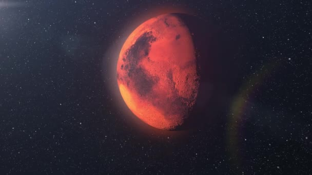

Discover the wonders of Mars, the red planet that has captured the human imagination for centuries. Learn about its environment, history, and the bold missions aiming to bring humans to its surface.
Explore the challenges, the technologies, and the people driving the next giant leap in space exploration.
Mars is one of the most interesting planets in our solar system. It is called the Red Planet because of its reddish color, which comes from iron-rich dust on its surface. Scientists and space agencies have been studying Mars for many years to learn more about it and to prepare for future missions. This website will guide you through the journey to Mars. You will learn what makes Mars special, and how humans are getting ready to travel there. Space exploration takes a lot of planning, teamwork, and advanced technology. Join us as we explore what it takes to make this incredible journey happen.